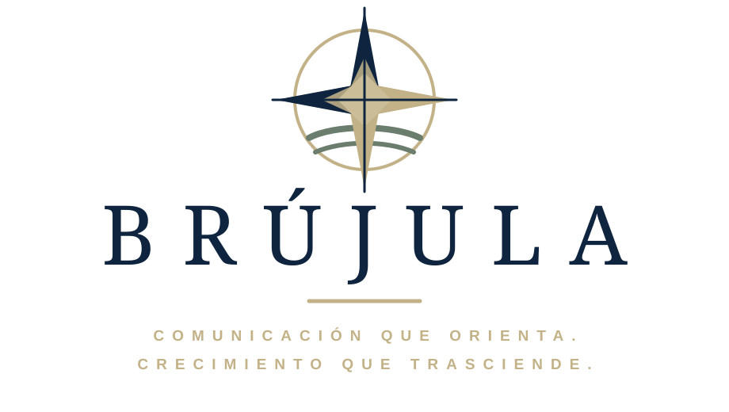

Tradición
Nuestras raíces, nuestros valores, nuestra identidad.

Diseñamos el rumbo. Cada organización construye el camino.
Si tu organización comunica todos los días, pero todavía no logra decir con claridad quién es, qué ofrece y por qué importa, no necesita más ruido. Necesita rumbo.
En BRÚJULA diseñamos estrategias para que empresas, clubes, cooperativas e instituciones transformen su comunicación en una herramienta de confianza, crecimiento y decisión.
No publicamos por publicar.
No maquillamos mensajes.
Construimos una dirección para que cada equipo pueda comunicar mejor.
Nuestra esencia
Acompañamos a empresas e instituciones a encontrar su rumbo, comunicar con autenticidad y crecer con confianza hacia el futuro.
Nuestras raíces, nuestros valores, nuestra identidad.
Lo que nos define, lo que nos une, lo que nos inspira.
Mirada estratégica, innovación, desarrollo y evolución constante.
Identidad institucional
BRÚJULA acompaña a organizaciones que necesitan profesionalizar su comunicación sin perder su voz propia. Trabajamos sobre mensajes, criterios, procesos y capacidades para que cada equipo pueda comunicar con autonomía.
Definimos prioridades, audiencias y mensajes para ordenar la comunicación.
Construimos una voz coherente con la historia, los valores y los objetivos de la organización.
Diseñamos criterios para sostener vínculos claros, consistentes y profesionales.
Escuchamos para entender.
Transformamos ideas en mensajes.
Construimos relaciones sólidas y duraderas.
Aprendemos, nos adaptamos y miramos hacia adelante.
Comunicamos lo que realmente importa.
Quiénes somos
Fotografía y comunicación institucional.
Estrategia digital, publicaciones y métricas.
Video, narrativa audiovisual y reels.
Qué hacemos
No administramos redes.
No publicamos por los clientes.
No reemplazamos equipos.
Diseñamos estrategias, capacitamos y acompañamos.Método NORTE
Precisamos el punto de partida y aquello que la organización necesita resolver.
Leemos contexto, identidad, canales, audiencias y oportunidades reales.
Definimos criterios, mensajes, prioridades y una dirección compartida.
Convertimos la estrategia en capacidades, acuerdos y modos de trabajo.
Ordenamos acciones concretas para que el equipo pueda avanzar con autonomía.
Servicios
Una lectura estratégica del estado actual de la comunicación.
Plan de acción, criterios de contenido y prioridades para ejecutar.
Encuentros para fortalecer equipos y ordenar procesos internos.
Acompañamiento para tomar mejores decisiones de comunicación.
Construcción de mensajes, narrativa y presencia pública consistente.
Propuestas por organización
No todas las organizaciones necesitan lo mismo. Abrí cada propuesta para conocer un punto de partida pensado para su identidad, sus públicos y sus objetivos.
Propuesta BRÚJULA
Ordenamos la identidad y los mensajes de la empresa para que cada contacto con clientes, equipos y aliados sostenga una misma dirección.
Una empresa reconocible, un equipo alineado y una comunicación que acompaña los objetivos del negocio.
Propuesta BRÚJULA
Transformamos el proyecto educativo en una narrativa clara para fortalecer el vínculo con familias, docentes, estudiantes y la comunidad.
Una institución que comunica su valor, reduce la incertidumbre y fortalece la pertenencia.
Propuesta BRÚJULA
Organizamos la comunicación del club para integrar disciplinas, socios, familias, dirigentes, deportistas y patrocinadores.
Más pertenencia, mayor participación y una presencia institucional atractiva para nuevos apoyos.
Propuesta BRÚJULA
Traducimos la identidad cooperativa y la gestión cotidiana en mensajes cercanos que fortalecen la confianza de asociados y comunidad.
Asociados mejor informados, mayor participación y una institución que hace visible su aporte colectivo.
Propuesta BRÚJULA
Construimos una narrativa que muestra el problema, el trabajo y el impacto de la organización para convocar voluntades y sostener vínculos.
Una organización capaz de explicar su impacto, sumar apoyos y comunicar con continuidad aun con recursos limitados.